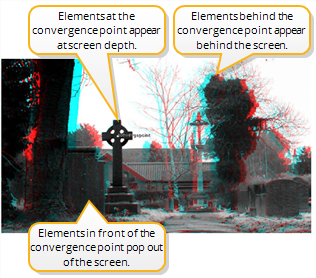

the two cameras meet.
The ReConverge node lets you shift convergence (the inward rotation of the eyes or cameras) so that any selected point in the image appears at screen depth when viewed with 3D glasses. This point is called the convergence point. It is the point where the lines of sight from the two cameras meet.
|
|
| Changing convergence moves the point where the lines of sight from the two cameras meet. |
At the convergence point, the different views in the image are aligned and appear at screen depth when viewed with 3D glasses. Anything behind the convergence point appears behind the screen, while anything in front of it seems to pop out of the screen. This is illustrated in the figure below.
|
 |
| Convergence controls where elements in the image appear in relation to the screen when viewed with 3D glasses. |
Changing convergence changes the perceived depth of the images. It moves all the elements in the image backwards or forwards a fixed distance while keeping the distance between them the same. This is illustrated in the figure below, where the gray rectangles represent elements depicted in a stereo image.
|
|
| Changing convergence changes the perceived depth of the images. |
Often, the element of an image that appears closest to the audience is used as the convergence point. However, to make an element in your image jump out of the screen, you need to converge on something behind this element.
To calculate the convergence shift, the ReConverge node needs a disparity field that maps the location of a pixel in one view to the location of its corresponding pixel in the other view. To create the disparity field, you can use the O_DisparityGenerator plug-in, which is part of the Ocula plug-in set. Alternatively, you can create the disparity field in a 3D application. Once you have the disparity field, you can store it in the channels of an .exr file or use the ShuffleCopy node to add the disparity channels in the data stream where you need them.
Note that the ReConverge node only shifts views horizontally, not vertically.
| 1. | Make sure there is a disparity field upstream from the image sequence whose convergence you want to change. If the image sequence is an .exr file, the disparity field can be included in its channels. Otherwise, you can use a ShuffleCopy node or Ocula’s O_DisparityGenerator plug-in to add it in the data stream. |
| 2. | From the Toolbar, select Views > Stereo > ReConverge to insert a ReConverge node after the image sequence whose convergence you want to adjust. |
| 3. | Attach a Viewer to the ReConverge node. |
| 4. | To better view the effect of the ReConverge node, insert an Anaglyph node (Views > Stereo > Anaglyph) between the ReConverge node and the Viewer. |

| 5. | Make sure the ReConverge properties panel is open. You should see the convergence point overlay in the Viewer. Drag the point on top of the point you want to appear at screen level when viewed with 3D glasses. The convergence shifts to this location. |
You can also move the convergence point by entering the point’s x and y coordinates in the Convergence upon fields.
| 6. | By default, the ReConverge node moves the right view to achieve the convergence shift. However, if you like, you can use the Mode dropdown menu in the ReConverge controls to move the left view instead (select shift left) or move both views equally (select shift both). |
| 7. | If necessary, adjust the offset for convergence (in pixels) in the ReConverge controls. To bring all elements of your image forward from the screen level, enter a positive value in the Convergence offset field. To move all elements further away, enter a negative value. |
It is also possible to use the same element as the convergence point throughout the image sequence. You can, for example, have the same actor always appear at screen depth. To converge on the same element throughout the sequence, link the ReConverge node with a Tracker node.
| 1. | Insert a Tracker node after the image sequence whose convergence you want to adjust. |
| 2. | Track the point that you want to appear at screen level throughout the sequence. For more information on how to use the Tracker node, refer to Tracking and Stabilizing . |
| 3. | When you have the track animation data, apply it to the ReConverge node’s Converge upon control via a linking expression. The easiest way to do this is to Ctrl/Cmd+drag the animation button next to the tracks list to the animation button next to the Converge upon control. |

|
|